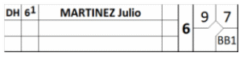

|
 |
Si le frappeur désigné devient un joueur défensif, utilisez la colonne «Position» appropriée pour indiquer sa position défensive. |
Il n’est pas nécessaire de tracer une ligne verticale, puisque le joueur n’a pas changé, seule sa position a été modifiée. Toutefois, le changement de position défensive doit être indiqué par une ligne horizontale sur la feuille de scorage de l’équipe adverse.